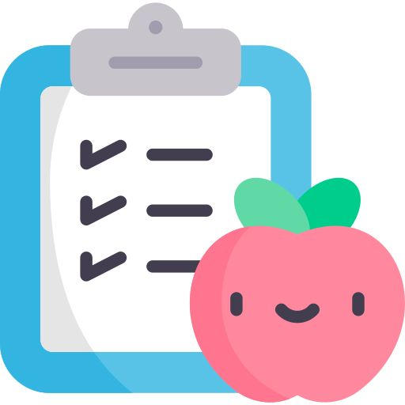
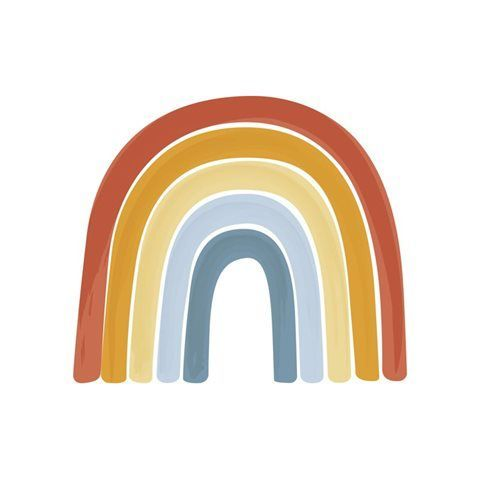

IA para acompañar a las familias
Amigos Unidos es una plataforma de inteligencia artificial familiar. Froggi ofrece orientación conversacional y reúne herramientas de seguimiento, calendario y apoyo digital por etapa; no somos una guardería.
-

Conversación contextual
Froggi puede considerar la edad y el contexto que comparte la persona cuidadora para responder consultas sobre crianza y desarrollo.
-
Herramientas de seguimiento
La plataforma reúne crecimiento con referencias OMS, hitos del desarrollo, calendario familiar y acompañamiento digital durante el embarazo.
-

IA con límites claros
La orientación puede equivocarse y no sustituye a profesionales de salud ni a la supervisión adulta. El análisis de llanto es experimental.
Froggi, tu asistente digital
Explora las funciones de inteligencia artificial para conversación, desarrollo y acompañamiento familiar.
Herramientas
Funciones de inteligencia artificial
Froggi conversacional
Orientación por etapa
- Chat con contexto de edad y etapa
- Respuestas directas y lectura por voz
- Orientación sobre crianza y desarrollo
- Consulta disponible desde IA Ayudante
Seguimiento familiar
Herramientas por etapa
- Curvas de crecimiento con referencias OMS
- Exploración de hitos del desarrollo
- Calendario de citas y recordatorios
- Perfiles y contexto familiar
- Acompañamiento digital durante el embarazo
IA multimodal y creatividad
Funciones complementarias
- Orientación visual asistida
- Propuestas de menús
- Cuentos y canciones interactivos
- Recursos infantiles complementarios
- Análisis experimental de llanto, no diagnóstico
Inteligencia artificial responsable
Preguntas sobre Froggi y Amigos Unidos
Es una plataforma digital centrada en Froggi, un asistente de inteligencia artificial para orientar a madres, padres y cuidadores durante el embarazo, la crianza y el desarrollo infantil. No es una guardería ni ofrece cuidado presencial.
La consulta puede incluir la edad o etapa del niño y el contexto reciente para orientar la respuesta. La IA genera información de apoyo; conviene verificar decisiones importantes con profesionales cualificados.
Incluye consulta conversacional, seguimiento del crecimiento y los hitos, calendario familiar, acompañamiento durante el embarazo, orientación visual asistida y propuestas de menús. El análisis de llanto es experimental y no constituye un diagnóstico.
No. Froggi ofrece orientación educativa y asistencial, pero no diagnostica ni sustituye una evaluación profesional. Ante una urgencia, contacta los servicios de emergencia de tu localidad.
No bloquea otros sitios ni aplicaciones. Ofrece actividades y contenidos infantiles dentro de la plataforma; la supervisión adulta y los controles del dispositivo siguen siendo necesarios.